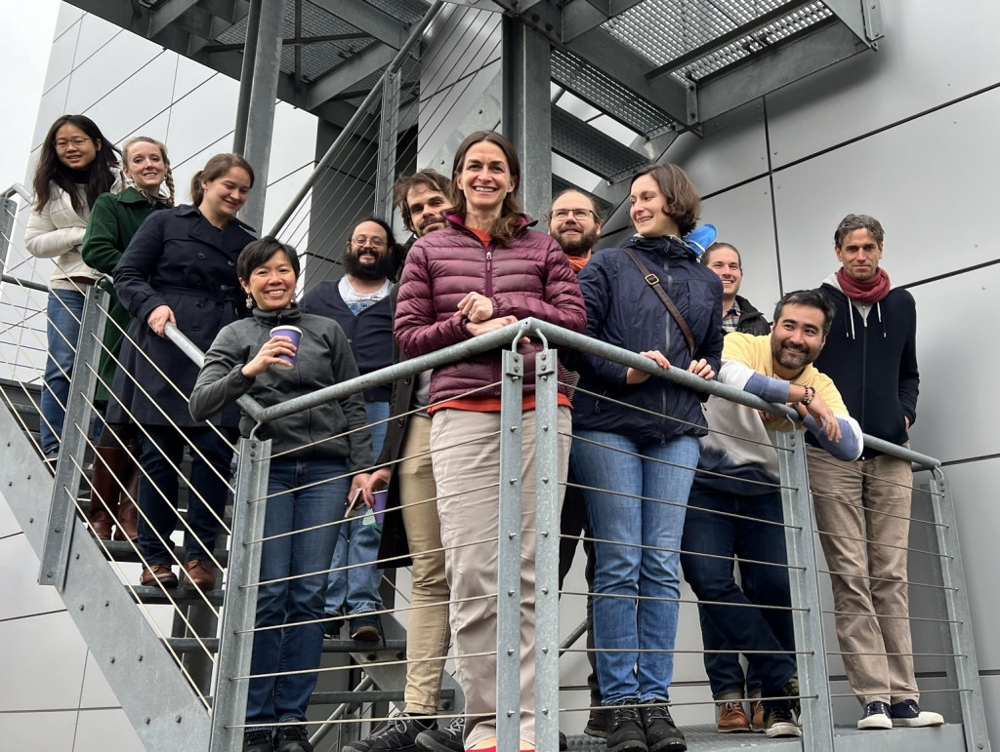
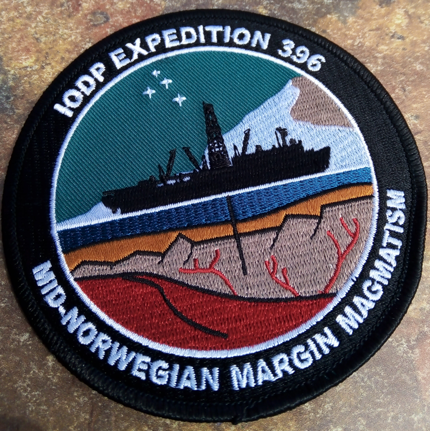

First, I attended the BioDEEPtime workshop in Erlangen, in the context of the PaleoSynthesis center series of workshops. The goal of that project: integrate ecological timeseries data from various organisms and a wide range of timespans (ranging from annual ecological studies to multi-million year paleontological timeseries) to identify the timescale of community turnover.
from the left to right: Huang Huai Hsuan, Erin Saupe, Amelia Penny, Lee Hsiang Liow, me, Adam Kocsis, Pincelli Hull, Manuel Steinbauer, Marina Costa Rillo, Jansen Smith, Mauro Sugawara, Adam Tomasovych. (Photo: Barbara Seuss)
Second, as mentioned in the previous posts, I participated in the "Coding the Column" workshop on stratigraphic databases.
And finally, I joined the IODP Expedition 396 Sampling Party at the MARUM in Bremen, where I was invited as shorebased collaborator, to sample a bunch of Paleocene and Eocene samples to allow me to work on the local radiolarian biostrat!
Patch of IODP Expedition 396.
More infos on each of those projects will come soon!